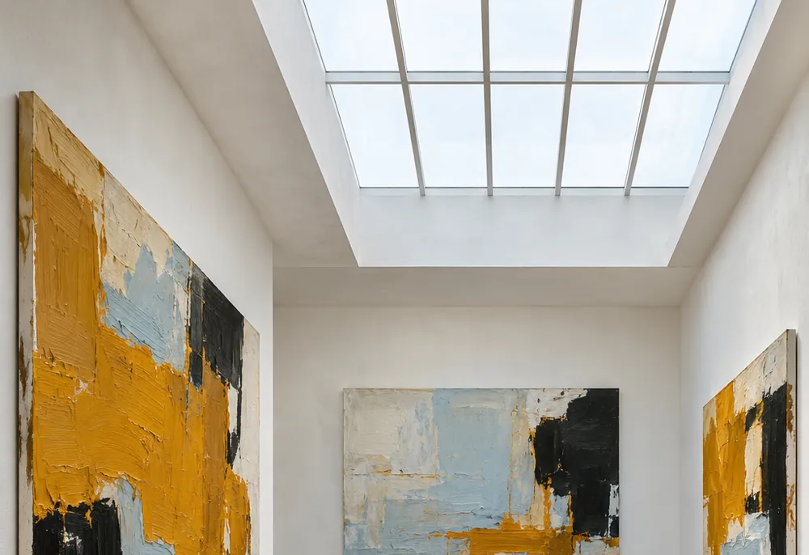
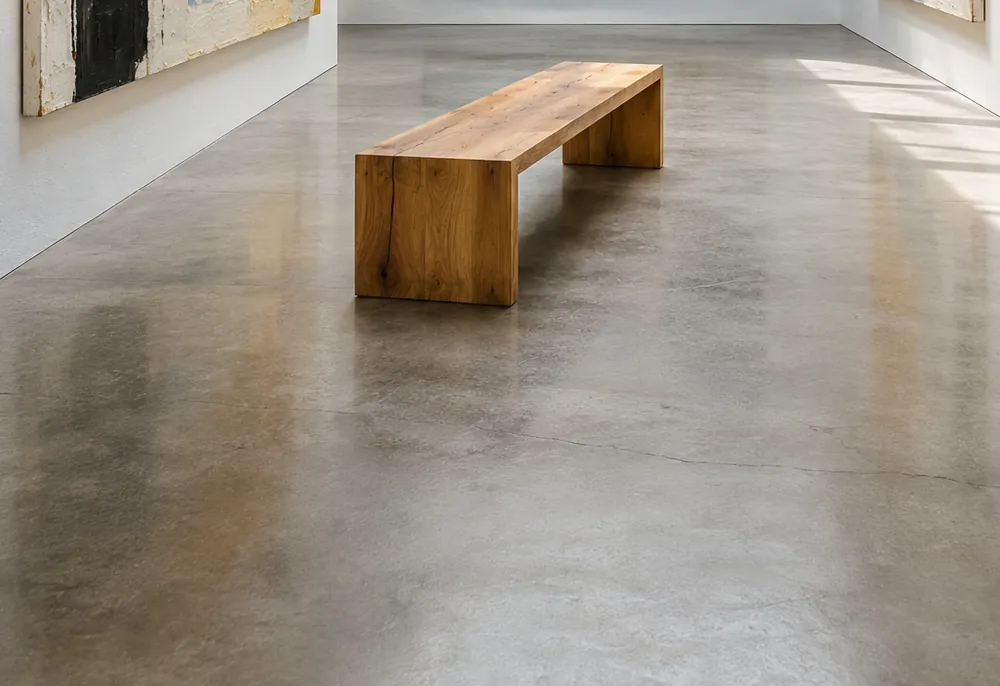

Hollin Gallery
A gallery that reads like a magazine.
Hollin shows twelve exhibitions a year and needed a site the curators could update in minutes. We designed a flexible, type-led identity and a website that works like the front page of a magazine. While each show runs, it takes over the colour of the whole site.
- Sector
- Culture
- Year
- 2022
- Work
- Brand identity, website

